转发自https://www.cnblogs.com/shenzikun1314/p/6604867.html#4262295
一个用户可以属于多个角色，比如邓超。他是孙俪的丈夫，同时是他小孩的父亲，还是他老爸的儿子。那么这里他一共有丈夫，父亲，儿子3个角色。
一个角色可以有多个用户。比如学生（角色），张三，李四，王五等。
所以用户跟角色是多对多的关系。
一个角色可以多个权限。比如把文章模块分为查看，修改，添加，删除这4个权限。普通用户只有查看的权限，但管理员他可以同时有这4个权限。
一个权限也可以被多个角色同时拥有。普通用户和管理员都有查看权限。
所以权限跟角色也是多对多的关系。
第一张用户表
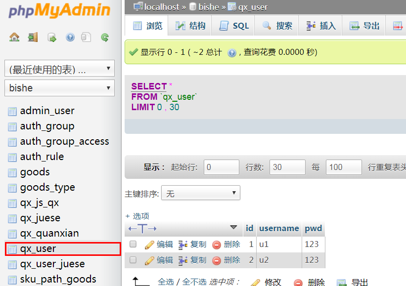
第二张角色表
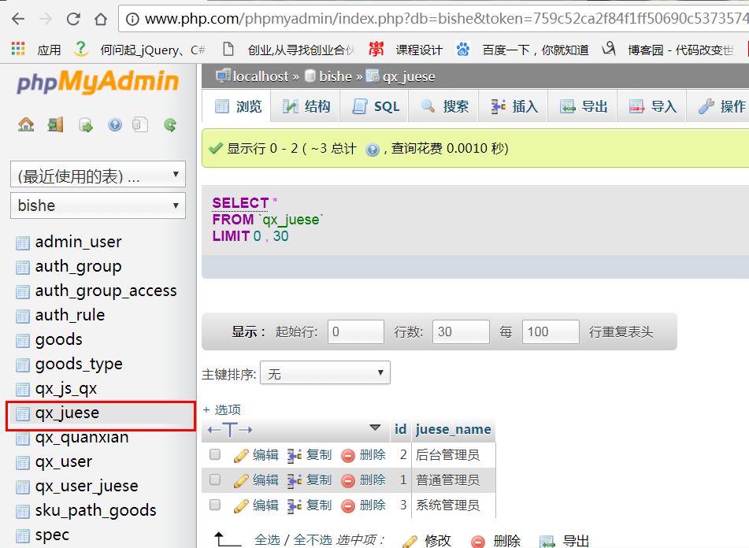
第三张权限表
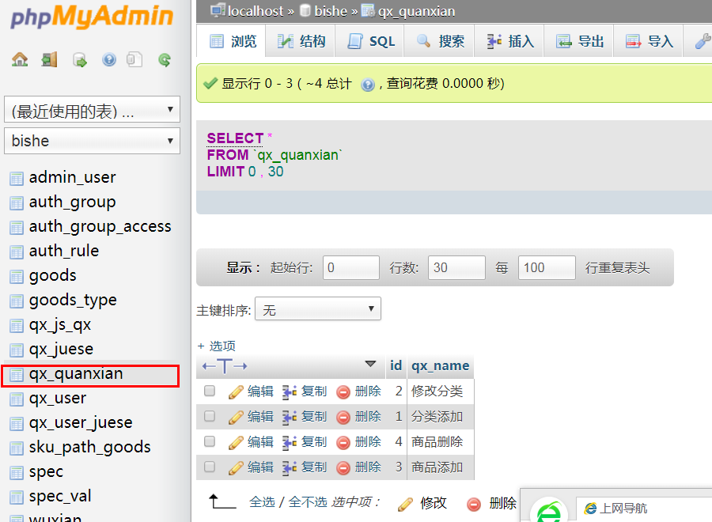
接下来是2张中间表。
用户-角色表（要设置多对多的外键关联关系）
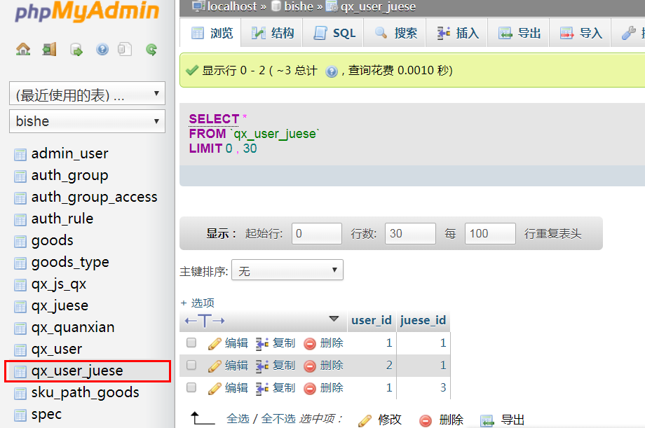
最后一张角色-权限表（设置多对多的关联关系）
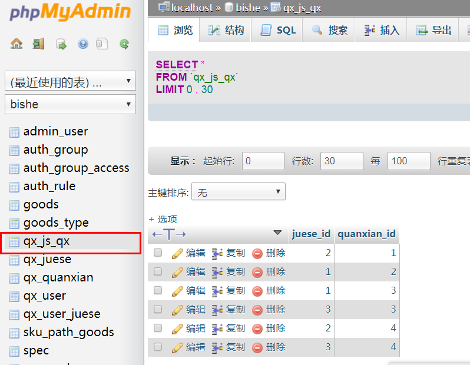
第一个guanli.php,用到ajax等jquery语法，要引用jquery文件。这个页面是修改用户的角色权限
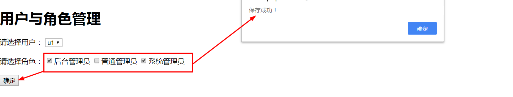
<?php
error_reporting(E_ALL ^ E_DEPRECATED);
include("DB.class.php");
$sql = "select * from qx_user";
$arr = $dao->getAll($sql);
// var_dump($arr);
// exit;
$sql = "select * from qx_juese";
$arr2 = $dao->getAll($sql);
foreach($arr as $v){
// var_dump($v);
// exit;
}
?>
<!DOCTYPE html PUBLIC "-//W3C//DTD XHTML 1.0 Transitional//EN" "http://www.w3.org/TR/xhtml1/DTD/xhtml1-transitional.dtd">
<html xmlns="http://www.w3.org/1999/xhtml">
<head>
<meta http-equiv="Content-Type" content="text/html; charset=utf-8" />
<title>无标题文档</title>
<script src="assets/js/jquery-1.8.2.min.js"></script>
<!-- <script src="../../dist/js/jquery-1.11.2.min.js"></script> -->
</head>
<body>
<h1>用户与角色管理</h1>
<div>
请选择用户：
<select id="user">
<?php foreach($arr as $v){
// var_dump($v);
// exit;
?>
<option value="<?php echo"$v[id]" ?>"> <?php echo "$v[username]";?></option>
<?php } ?>
</select>
</div>
<br />
<div>
请选择角色：
<?php foreach($arr2 as $v2){ ?>
<input type='checkbox' value="<?php echo"$v2[id]" ?>" class='ck' /><?php echo "$v2[juese_name]" ?>
<?php } ?>
</div>
<br />
<input type="button" value="确定" id="btn" />
</body>
<script type="text/javascript">
$(document).ready(function(e) {
//选中默认角色
Xuan();
//当用户选中变化的时候，去选中相应角色
$("#user").change(function(){
Xuan();
})
//点击确定保存角色信息
$("#btn").click(function(){
var uid = $("#user").val();
var juese = "";
var ck = $(".ck");
for(var i=0;i<ck.length;i++)
{
if(ck.eq(i).prop("checked"))
{
juese += ck.eq(i).val()+"|";
}
}
juese = juese.substr(0,juese.length-1);
$.ajax({
url:"chuli.php",
data:{uid:uid,juese:juese,type:1},
type:"POST",
dataType:"TEXT",
success: function(data){
alert("保存成功！");
}
});
})
});
//选中默认角色
function Xuan()
{
var uid = $("#user").val();
$.ajax({
url:"chuli.php",
data:{uid:uid,type:0},
type:"POST",
dataType:"TEXT",
success: function(data){
// var juese = data.trim().split("|");
// var ck = $(".ck");
// ck.prop("checked",false);
// for(var i=0;i<ck.length;i++)
// {
// if(juese.indexOf(ck.eq(i).val())>=0)
// {
// ck.eq(i).prop("checked",true);
// }
// }
// console.log(data);
var obj = eval('(' + data + ')');
console.log(obj);
var str="";
for(var i=0;i<obj.length;i++){
str+=" ";
str+=obj[i].juese_id;
}
str=$.trim(str)
console.log($.trim(str));
var ck = $(".ck");
ck.prop("checked",false);
for(var i=0;i<ck.length;i++)
{
if(str.indexOf(ck.eq(i).val())>=0)
{
ck.eq(i).prop("checked",true);
}
}
}
});
}
</script>
</html>第二个登录页面login.php
<!DOCTYPE html PUBLIC "-//W3C//DTD XHTML 1.0 Transitional//EN" "http://www.w3.org/TR/xhtml1/DTD/xhtml1-transitional.dtd">
<html xmlns="http://www.w3.org/1999/xhtml">
<head>
<meta http-equiv="Content-Type" content="text/html; charset=utf-8" />
<title>无标题文档</title>
</head>
<body>
<h1>登录页面</h1>
<form action="logincl.php" method="post">
<input type="text" name="username" />
<input type="password" name="pwd" />
<input type="submit" value="登录" />
</form>
</body>
</html>第三个页面处理登录页面logincl.php
<?php
header('content-type: text/html; charset=utf-8');
session_start();
include("DB.class.php");
$username = $_POST["username"];
$pwd = $_POST["pwd"];
// $uid=$_POST["uid"];
// $sql="select pwd from qx_user where uid='{$uid}'";
// $mm = $dao->getOne($sql);
// if($mm==$pwd && !empty($pwd))
// {
// $_SESSION["uid"]=$uid;
// header("location:main.php");
// }
$username = $_POST['username'];
// 获取post传过来的密码
$password = $_POST['pwd'];
$sql = "select * from qx_user where username = '$username' and pwd = '$pwd' ";
$res = $dao->getRow($sql);
if($res){//如果存在,跳回本页面
$_SESSION['username'] = $username;
$_SESSION["uid"]=$res["id"];
echo '<script language="JavaScript">;
alert("登录成功");location.href="main.php";</script>;';
exit;
}else{//如果不存在
echo '<script language="JavaScript">;
alert("登录失败");</script>;';
//注册成功之后跳转到指定页面
echo "<script>location.href='#'</script>";
}第4个页面查看权限main.php，输出登录的用户的所有权限u1和u2对比
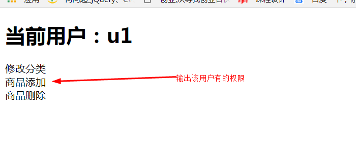
第二次登录u2
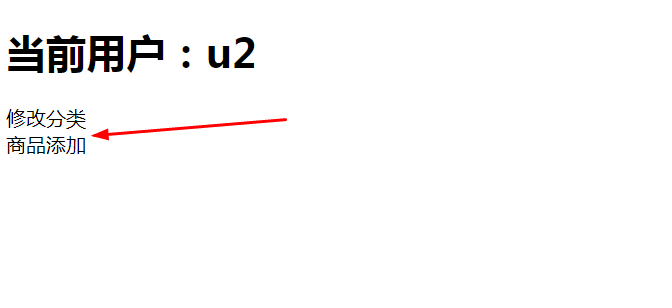
<?php session_start(); ?>
<!DOCTYPE html PUBLIC "-//W3C//DTD XHTML 1.0 Transitional//EN" "http://www.w3.org/TR/xhtml1/DTD/xhtml1-transitional.dtd">
<html xmlns="http://www.w3.org/1999/xhtml">
<head>
<meta http-equiv="Content-Type" content="text/html; charset=utf-8" />
<title>无标题文档</title>
</head>
<body>
<h1>
当前用户：<?php echo "$_SESSION[username]";?>
</h1>
<?php
error_reporting(E_ALL ^ E_DEPRECATED);
// session_start();
include("DB.class.php");
if(empty($_SESSION["uid"]))
{
header("location:qx_login.php");
exit;
}
//登录者用户名
$uid = $_SESSION["uid"];
//根据用户名查角色
$sjs = "select juese_id from qx_user_juese where user_id='{$uid}'";
$ajs = $dao->getAll($sjs);
// var_dump($ajs);
// exit;
//定义一个存放功能代号的数组
$arr = array();
//根据角色代号查功能代号
foreach($ajs as $vjs)
{
$jsid = $vjs['juese_id']; //角色代号
$sgn = "select quanxian_id from qx_js_qx where juese_id='{$jsid}'";
$strgn = $dao->getAll($sgn);
// $agn = explode("|",$strgn);
// var_dump($strgn);
// echo "xxx";
// exit;
foreach($strgn as $vgn)
{
array_push($arr,$vgn['quanxian_id']);
}
}
//去重，显示
// var_dump($arr);
// exit;
$arr = array_unique($arr);
// var_dump($arr);
// exit;
foreach($arr as $v)
{
$sql = "select * from qx_quanxian where id='{$v}'";
$attr = $dao->getRow($sql);
// var_dump($attr);
// exit;
// echo "{$attr['id']},{$attr['qx_name']}";
echo "<div code='{$attr["id"]}'>{$attr["qx_name"]}</div>";
// <input type='checkbox' value="$attr[id]" class='ck' />
}
?>
</body>
</html>第5个工具类代码DB.class.php，在构造函数__construct()中修改默认的配置参数，数据库名，用户名，密码等。否则会连接数据库失败。
<?php
// namespace Frame\libs;
class DB{
//主机地址
var $host;
//用户名
var $username;
//密码
var $password;
//数据库名
var $dbname;
//字符集
var $charset;
//数据库连接对象，主要用在mysql_query($sql,$this->con);
private $con;
//外界获取的mysqlDB类操作对象
public static $dao;
//获得mysqlDB类对象(单例)
public static function getInstance($config){
if(!isset(self::$dao)){
self::$dao = new self($config);
}
return self::$dao;
}
//private禁止外部new，减少new带来的开销，并设置默认的配置。
private function __construct($config){
$this->host = isset($config['host'])?$config['host']:'localhost';
$this->port = isset($config['port'])?$config['port']:'3306';
$this->username = isset($config['username'])?$config['username']:'root';
$this->password = isset($config['password'])?$config['password']:'root';
$this->dbname = isset($config['dbname'])?$config['dbname']:'bishe';
$this->charset = isset($config['charset'])?$config['charset']:'utf8';
//连接数据库
$this->con = $this->connect();
//设置数据库名，默认为test
$this->useDb($this->dbname);
//设置字符集，默认为utf8。
$this->setCharset($this->charset);
}
//禁止外部克隆
private function __clone(){
}
//连接不成功在这个分段找。
//////////////////////////////////////////////////////
//连接数据库
public function connect(){
$con =
mysql_connect("$this->host:$this->port","$this->username","$this->password") or die("连接数据库失败");
return $con;
}
//1.执行增、删、改sql语句
public function exec($sql){
$res = mysql_query($sql,$this->con);
if($res){
// echo "<br/>sql语句：".$sql."<br>";
// var_dump($res);
return true;
//要是增删改有问题可以在这里输出sql调试。
}else{
echo "<br/>sql语句：".$sql;
echo "<br/出错信息>：".mysql_error();
echo "<br/出错代码>：".mysql_errno();
exit;
}
}
//额外设置字符集
public function setCharset($charset){
$sql = "set names '$charset'";
$this->exec($sql) or die("set");
//die();
}
//额外设置数据库
public function useDb($dbname){
$sql = "use $dbname";
$this->exec($sql) or die("use");//or die()函数前面需返回对应的true或false;
}
////////////////////////////////////////////////////////
//查找出错在这个部分找。
//4.将查到的结果集转为单个数据，这里是索引数组的第一个字段。
public function getOne($sql){
$rec = mysql_query($sql,$this->con);
$res = mysql_fetch_row($rec);
if($res){
return $res[0];
}else{
return false;
}
}
//可能修改的函数全部放在上面，以便查找。下方函数基本不会修改。
//编号1~4是高频率使用的函数。
//2.获取一行数据（一维）
public function getRow($sql){
$rec = mysql_query($sql,$this->con);
$res = mysql_fetch_assoc($rec);
if($res){
return $res;
}else{
return false;
}
}
//3.获取所有数据（二维）
public function getAll($sql){
$rec = mysql_query($sql,$this->con);
$arr = array();//定义 一个数组
while($res = mysql_fetch_assoc($rec)){
$arr[] = $res;
}
if($arr){
return $arr;
}else{
return false;
}
}
}
$dao = DB::getInstance(null);
?>第6个chuli.php.这个页面是用来处理guanli.php发过来的ajax请求。
<?php
error_reporting(E_ALL ^ E_DEPRECATED);
include("DB.class.php");
$type = $_POST["type"];
switch($type)
{
case 0:
$uid = $_POST["uid"];
$sql = "select juese_id from qx_user_juese where user_id='{$uid}'";
$data = $dao->getAll($sql);
// $id_list="xx";
// foreach($data as $v)
// {
// $id_list =","+"$v[juese_id]";
// echo json_encode($id_list);
// exit;
// }
// echo json_encode($data);
echo json_encode($data);
break;
case 1:
$uid = $_POST["uid"];
$juese = $_POST["juese"];
$sdel = "delete from qx_user_juese where user_id='{$uid}'";
$dao->exec($sdel);
$arr = explode("|",$juese);
foreach($arr as $v)
{
// echo $v;
$sql = "insert into qx_user_juese values('{$uid}','{$v}')";
$dao->exec($sql);
}
echo "OK";
break;
}难点是guanli页面的ajax请求。
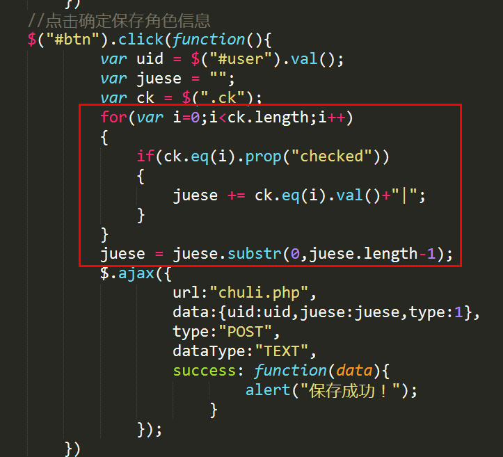
js解析二维数组
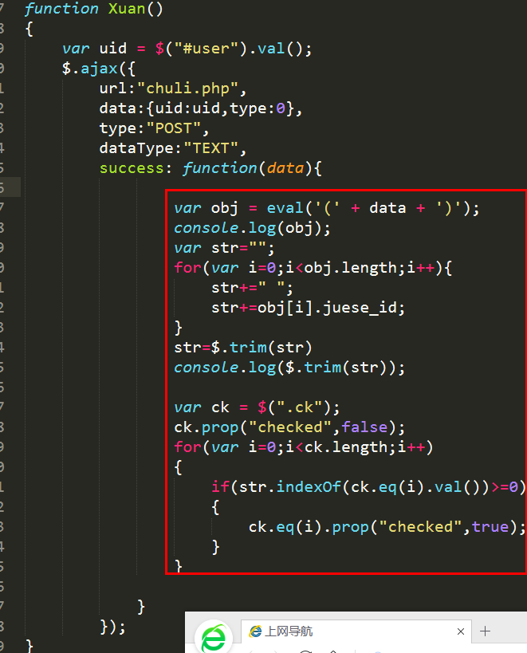
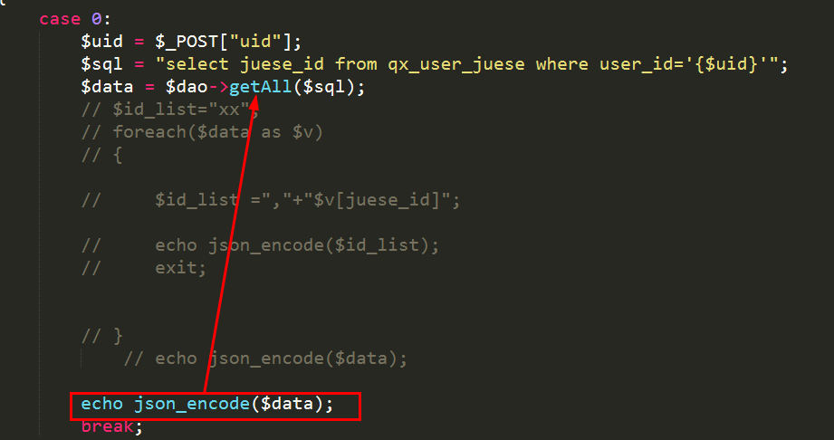
（完）